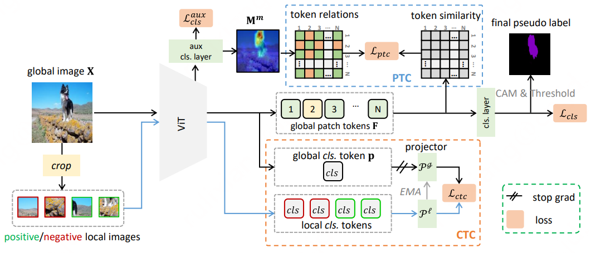

Biography
I'm currently a computer vision researcher at Ant Group. I received my Ph.D degree from the School of Computer Science, Wuhan University, in 2023. Before that, I received my Bachelor's degree from School of Cyber Science and Engineering, Wuhan University.
My research interests include Multi-Modal Learning and Reasoning, Visual Understanding and Remote Sensing.
Education
-

School of Computer Science, Wuhan University
Ph.D in Computer Science, 2018.09 - 2023.06.
-
School of Cyber Science and Engineering, Wuhan University
B.Sc in Information Security, 2014.09 - 2018.06.
Work Experience
-

Senior Algorithm Engineer, 2023.07 - Present.
-

Research Intern, 2021.03 - 2022.11.
Publications
For a full list, please visit my Google Scholar profile.
#: Co-first authors.
-
ARGenSeg: Image Segmentation with Autoregressive Image Generation Model
Neural Information Processing Systems (NeurIPS), 2025.
-
-
-
A Semantic-Enhanced Multi-Modal Remote Sensing Foundation Model for Earth Observation
Nature Machine Intelligence (NMI), 2025.
-
SkySense V2: A Unified Foundation Model for Multi-modal Remote Sensing
International Conference on Computer Vision (ICCV), 2025.
-
Computer Vision and Pattern Recognition (CVPR), 2024.
-

Parameter-Efficient Complementary Expert Learning for Long-Tailed Visual Recognition
ACM Multimedia 2024 (ACM MM), 2024.
-

Token Contrast for Weakly-Supervised Semantic Segmentation
IEEE Conference on Computer Vision and Pattern Recognition (CVPR), 2023.
-
IEEE Conference on Computer Vision and Pattern Recognition (CVPR), 2022.
-

Weakly-Supervised Semantic Segmentation with Visual Words Learning and Hybrid Pooling
International Journal of Computer Vision (IJCV), 2022.
-
Learning Visual Words for Weakly-Supervised Semantic Segmentation
International Joint Conference on Artificial Intelligence (IJCAI), 2021.
-
Multi-Temporal Scene Classification and Scene Change Detection with Correlation based Fusion
IEEE Transactions on Image Processing (TIP), 2020.
-
Unsupervised Deep Slow Feature Analysis for Change Detection in Multi-Temporal Remote Sensing Images
IEEE Transactions on Geoscience and Remote Sensing (TGRS), 2019.
Honors & Awards
- 2023.07 Ant Star Program; Ant Group;
- 2023.04 Outstanding Graduate Student; Wuhan University;
- 2022.10 National Scholarship; Wuhan University;
- 2022.05 Second Prize of Doctoral Forum; School of Computer Science, Wuhan University;
- 2021.11 National Scholarship; Wuhan University;
- 2020.04 IEEE GRSS Transactions Prize Paper Award; IEEE GRSS Society;
Academic Service
- Journal Reviewer: TPAMI, IJCV, TIP, TNNLS, TMM, TCSVT, TGRS, TAI, PR, Neurocomputing, ...
- Conference Reviewer: CVPR, ICCV, NeurIPS, ECCV, AAAI, ACM MM, ...